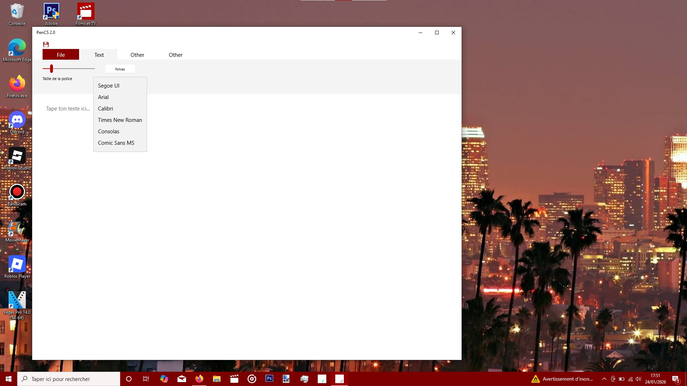

Experience ultra-fluid word processing designed for focus and creativity.

A clean interface that stays out of your way, letting your ideas flow directly onto the digital page.
Built for Altos OS, Pen CS handles massive documents with zero lag and instant saving.